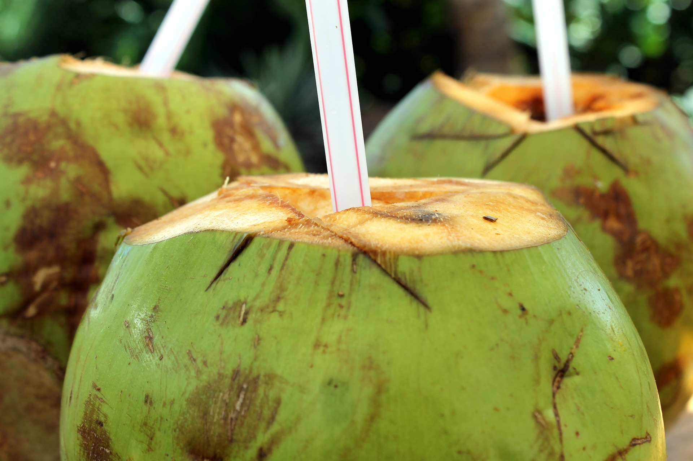
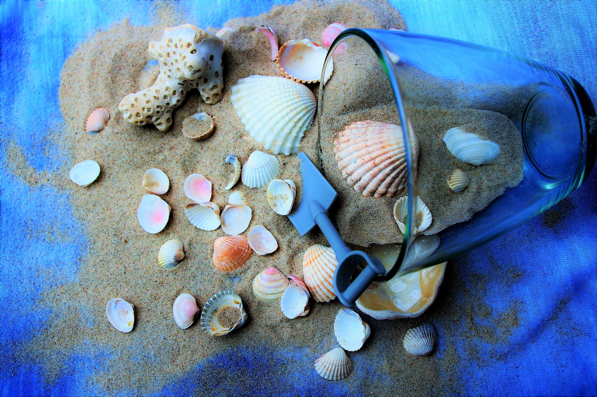

mets savoureux

Les fruits de mer sont faciles à préparer, légers et raffinés, les coquillages et crustacés sont les stars de nos tables de fête. Pour le plus grand bonheur de nos papilles, mais aussi de notre santé. En tartare, en sauce, grillés les fruits de mer sont cuisinés de différentes façons pour aporter à chaque fois une texture et un goût différent à ce produit d'exception. la grande variété de fruits de mer laisse place à d'innombrales recettes à découvrir. Un passages obligatoire dans la quête d'évasion et de découverte.

nos boissons
Noix de coco, lait de coco, eau de coco… Toutes ces boissons à base de coco vous font tourner la tête et vous ne savez plus qu’est-ce qui est quoi ? Déjà, il faut savoir que l’eau de coco ressemble beaucoup au lait de coco. La différence se retrouve surtout dans l’aspect de cette boisson. En effet, le lait de coco est bien plus épaisse et blanc que l’eau. La noix de coco ce fruit exotique qui peut se manger avec la pulpe de coco deux produits qui rafraichissent, nourrissent et qui amène à l'évasion.
nos joujoux
Êtes-vous plutôt poupées en coquillages un peu kitsch et collées à la glue? Ou petits pots en verre posés sur le rebord de la baignoire, remplis de trésors de la plage, pour se remémorer l’été toute l’année? Ramasser les coquillages au bord de l’eau, il n’y a rien de plus commun, se promettre qu’on les gardera précieusement, non plus.
divertissement
Le surf pratique qui n'a besoin que d'une planche et de quelques vagues pour un maximun de sensation et de dépaysement qu'importe le niveau de pratique en respectant certaines consignes pour éviter les risques. Plus qu’un sport, le surf est un état d’esprit qui offre à chacun un bien-être intérieur, quelques minutes de plaisir pour des heures de luttes "acharnées" et des instants de liberté absolu. Faire du surf vous rendra heureux sans aucun doute !